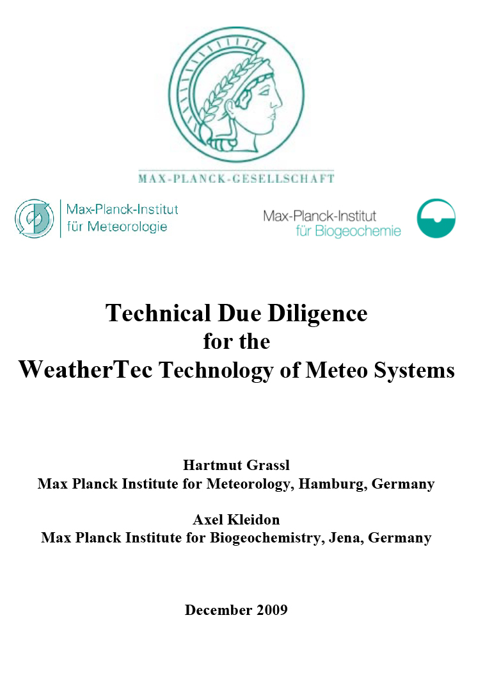
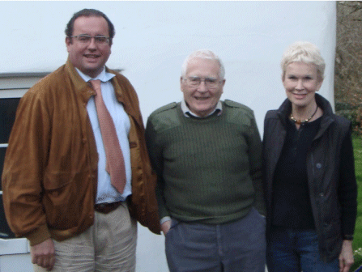
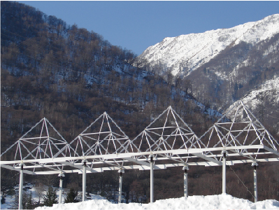

Stay updated with Rainmaker
Timeline
-
2020 WEF 2020
Davos: 2nd Vatican Round Table
Dr. Helmut Fluhrer, Founder and CEO
Elena Davydova, CTO & Co-Founder of WeatherTec Services
H.E. Cardinal Peter Turkson, Vatican
Arun Savkur, Executive Director of RainMaker -
2019 COP25 Madrid
Presentations and panel discussion participation
Indira AlDahabi, Vice President Academy for Water and Climate Security
Dr. Paul Oquist Kelley, Minister - Private Secretary for National Policies of the President of the Republic of Nicaragua
Elena Davydova, CTO & Co-Founder
Dr. Helmut Fluhrer, Founder and CEO -
2019 African Union Meeting
Washington D.C., speaker
-
2019 WMO: General Assembly World Meteorological Organization, Geneva
Dr. Fluhrer congratulates the new WMO President Prof. Dr.Gerhard Adrian
CEO Dr. Fluhrer, Petteri Taalas, Director General WMO World Meteorological Organization, CTO Elena Davydoya
H.E. Minister of Envrionment Ghana, Kwabena Frimpong-Boateng
Executives of Ghana and Jordan Meteorological Offices -
2019 WEF MENA 2019 and WEF Africa 2019: Speaker
Dr. Helmut Fluhrer with His Majesty King Abdullah II of Jordan
-
2019 Jordan Government Report about the success of the Technology in 2016-2019
• +35% more Rainfall compared with neighboring areas
• Main dams were filled by 100% first time since the last 40 years
• 30% increase in rainfed plantations
• Extension of the wet season by over 2 months
• Strong Mitigation of the rapidly declining groundwater levels -
2019 WEF 2019 Davos: WT Presentations
1st Vatican Round Table, SDG LAB, etc.: Speaker
Dr. Helmut Fluhrer, Founder and CEO
Indira Al-Dahabi, Vice President Academy for Water and Climate Security
Elena Davydova, CTO & Co-Founder -
2019 Foundation of Task Force for Climate Action
-
2018 Vatican Award of the “Laudato Si Challenge Award”
The best solution to fight migration. The Jury testified that WeatherTec has the potential to provide water security for a billion people
-
2018 Sustainable Blue Economy Conference, Nairobi, Kenya, speaker
-
2018 COP 23 Bonn
Presentations and panel discussion participation
-
2017 COP 22 Marakesh
Presentations and panel discussion participation
-
2017 ThinkTank20 for G20, 2017 Berlin
Presentation
-
2017 Munich Security Conference 2017
Presentation on the Round Table for Water and Climate Security, speaker
-
2016 WeatherTec Academy Organises International Conference for Water and Climate Security
Held the first Congress in Amman, supported by the organization of the Munich Security Congress: 100 participants with Jordanian Vice-Premier, Ministers, Ambassadors, Brigadiers from Homeland Security, Scientists from German-Jordanian University and international institutions
-
2016 - Present Commercial Project Jordan, 2016 - ongoing
Restauration of ecosystem like it was before climate change: between Dead Sea and Syrian Border, covering 5.000 km2, most of agricultural land with a population of 7 million
-
2016 - Present WeatherTec’s “Academy for Water and Climate Security”
Training on highest executive level about weather modification potential, incl. state-of-the-art high-tech in meteorology and climatology
-
2015 COP 21, Paris
Participation
-
2012 - 2015 Tests for new internal processes
Algorithm development, process control with Big Data, real time observation and prediction and processes with eminent scientists and instituitions worldwide, test of most modern meteorological sensors
-
2011 Tests in the UAE and Switzerland for Fog Dissipation

-
2010 German TÜV SÜD ISO 9001:2008 Certification
Company and technology is the first in weather modification with that high level certificate
-
2009 - 2011 Commercial Project United Arab Emirates 2, Al Ain, 2009-2011
Main Project: 50 rainfall events in 4 months in the desert, despite no rain forecasted, numerous tests of new equipment
-
2009 Max Planck Institute
Basic Study by Prof. Dr. Hartmut Graßl, Max Planck Institute of Meteorology, Hamburg and Dr. Kleidon, Max Planck Institute for GeoBioChemistry, Jena
 -
2008 Commercial Project Australia 2, Bundaberg Region, 2008
Contract with Australian Government to enhance rainfalls in the Bundaberg region. The project was observed by University of Queensland and Wollongong.
-
2007 Commercial Project Australia 1, Brisbane, 2007
Contract with Australian Government for drought-breaking: after 3 years of zero rainfall nearly a billion m3 of additional fresh water were produced over a catchment area of 7.400 km2 within 6 weeks
-
2006 Test Project United Arab Emirates 1, Emirate Ras Al Keimah, 2006
Contract of Swiss Government and support from the Emirate of Ras Al Keimah and UAE Authorities: very successful first test in a desert, demonstrating +800% more rainfall in arid region, as well as cloud coverage tests to decrease ground temperature by 5° Celsius for strong energy savings and comfort climate.
-
2006 James Lovelock, independent scientist, environmentalist, and futurist
Dr. Helmut Fluhrer with James Ephraim Lovelock
-
2005 Switzerland
Contract by the Swiss Government to test technology in North and South Switzerland to enhance rainfall and snowfall and dissipate fog. The project demonstrated full technology potential there and readiness to test it in semi-arid areas
 -
2004 - 2007 Launch of R&D for a new generation of weather modification by ionizationBuilding a team of experts in meteorology, atmospheric physics, engineering, numerous workshops worldwide
-
2004 Company Founders, Fluhrer and Davydova
Start to evaluate Ionization technology in Russia and the US and found Meteo Systems AG, the forerunner of WeatherTec AG

Dr. Helmut FLuhrer, Elena Davydova
-
1990's RussiaPerestroika prevents further funding, small private operations start
-
1960's Russia: Adaption and further developmentOf original US invention in the Ionization technology; big trials for large agricultural regions, scientific research , certificates for environmental, health, communication technology, first satelite and radar measurements
-
1950's - 1960's USA: Drop of Ionization TechnologyShift to Cloud Seeding with planes: many unused WWII planes and jobless pilots available; start of strong global marketing for US Cloud Seeding technology with chemicals
-
End of WWII - 1950's USA: Successful Ionization Tests in TexasWith 10+miles overland lines to see rainfall patterns changing; Inventor of the ionisation technology was US scientist B. Vonnegut
-
1930's - WWII Russia: Launch of the Institute of RainLeningrad: observation of electricity influence on the rain clouds development